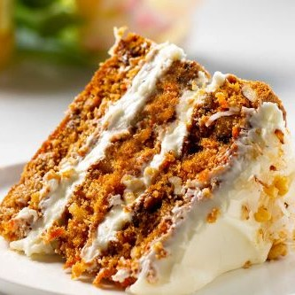
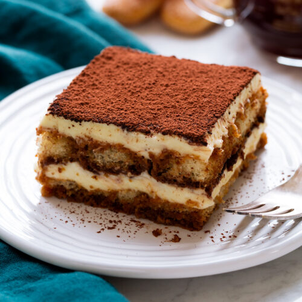

Welkom op mijn foodblog
Of je nu een doorgewinterde chef-kok bent of gewoon op zoek bent naar nieuwe recepten om uit te proberen, hier vind je inspiratie, tips en heerlijke creaties die je smaakpapillen zullen verwennen. Onze missie is simpel: we willen je helpen om de keuken te veroveren, nieuwe smaken te ontdekken en je liefde voor lekker eten te delen.
Recepten
Carrot Cake 
Deze cake wordt bereid met geraspte wortels, die een natuurlijke zoetheid en een zachte consistentie aan het gebak geven. De toevoeging van specerijen zoals kaneel en nootmuskaat versterkt de diepte van de smaak.
Tiramisu 
Dit heerlijke dessert combineert lagen van luchtige mascarponekaas, doordrenkt met koffie en cacoapoeder, met in koffie gedrenkte lange vingers, die een zachte, sponzige textuur krijgen.